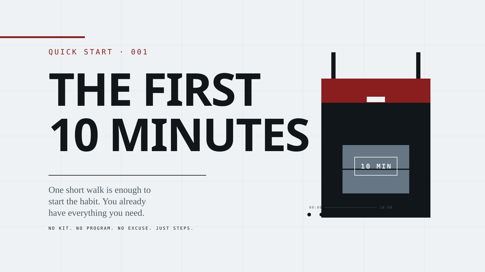
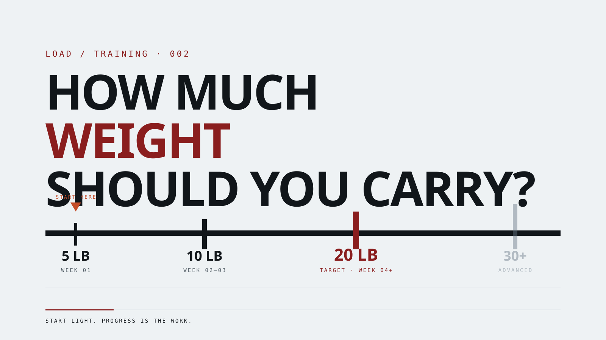
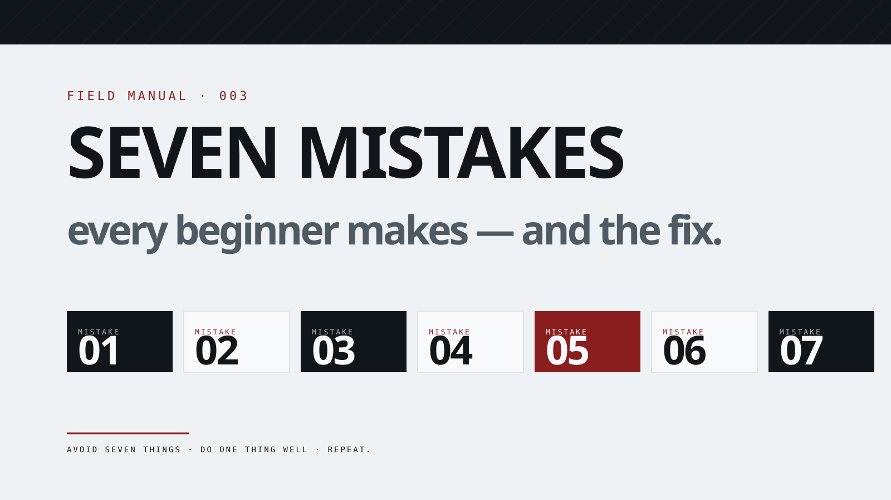
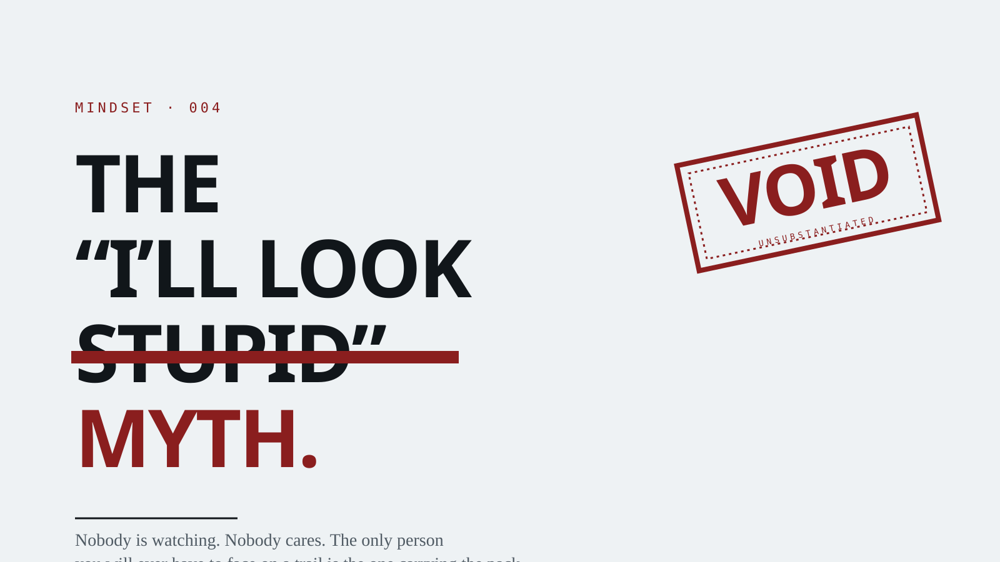
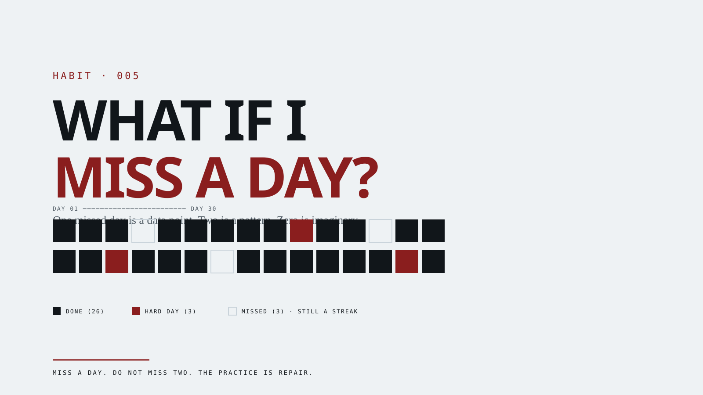

Rebuilt from scratch. Typographic-first: Archivo display, Plex Mono metadata, Source Serif body. Every illustration is an information diagram (timeline, load bar, numbered cards, habit grid, redacted stamp) — not decorative character art.




